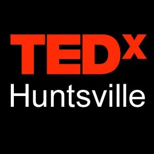

Blog · November 27, 2010
Share your TEDx experience


(mine is marvelous)
***
Few things compare to hosting your first TEDx..
TEDxHuntsville was a week ago and I’m still beaming. To the extent
that I am compelled to share this extraordinary excitement with you,
fellow TEDx-ers. Isn’t it marvelous?!!
The feeling you get when you walk on stage and see a room full of
people waiting in anticipation of “TEDx”, not knowing what to expect..
(I was probably as nervous as they were).
Queuing the welcome video made it sink in for me. The entire
experience was surreal. I watched the crowd watching the video and
involuntarily smiled ear to ear. TEDx was in my city!
What a rewarding, compelling, humbling opportunity, bringing together
hundreds of humans to explore thought through ideas worth spreading.
I am inspired. Delighted is an understatement. TEDx is an
extraordinary catalyst for passion.
Wow..what did I think after hosting my first TEDx? To answer my own
question,
I thought: humanity is a beautiful thing when reminded to thrive.
Thank you, TED, for extending TEDx to the world. And thank you, TEDx
hosts, for inspiring me and setting the bar high.
Please share your first TEDx experience. I am
excited to hear about it.
Cheers, to ideas worth spreading!
Amy Robinson
Connect with us on Facebook
Follow us on Twitter
www.tedxhuntsville.com
FYI – event summary: our first TEDxHuntsville hosted a sold out crowd
of 275 people who traveled from 6 different states to experience four
hours of “Perspectives on Innovation.” Presenters ranged from a
debut performance chronicling the evolution of jazz to next generation
space travel. We explored what’s next in genomics, the transformation
of atmospheric physics, acrobatic dance, the mathematics of war, and
then took a break to conclude the first session. I was amazed.
First published on my old blog, amyrobinson.wordpress.com, November 27, 2010.